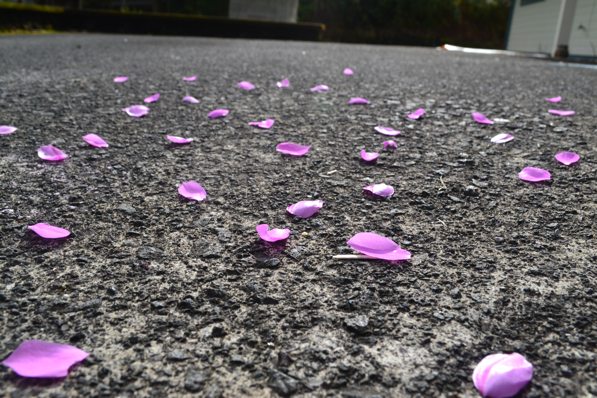
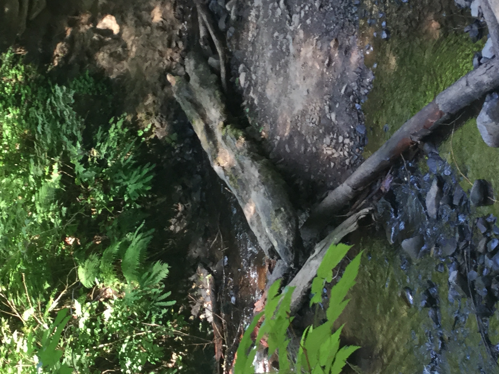
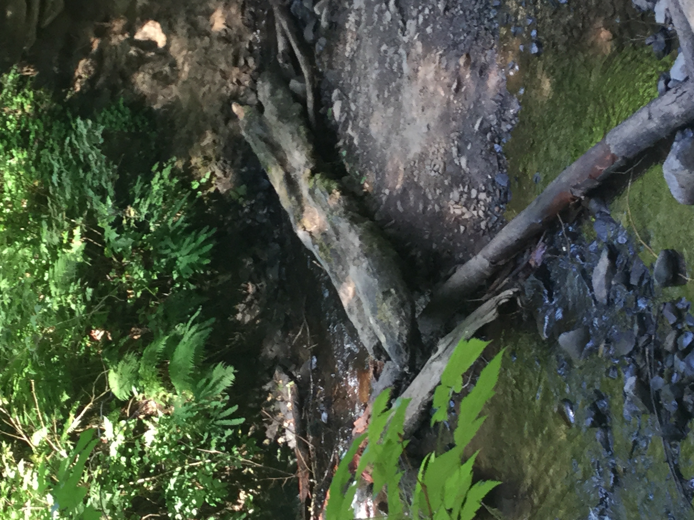

Gallery
As you explore the gallery, you'll encounter a stunning array of images that capture the breathtaking diversity of nature. Each photograph tells a unique story, inviting you to pause and appreciate the subtle interplay of light, color, and texture that defines our environment. This gallery is more than a collection of images; it is a celebration of the beauty that surrounds us, a tribute to the artistry of nature, and an invitation to see the world with fresh eyes. Enjoy the journey through our curated collection and let these visual narratives inspire your connection with the natural world.



 
